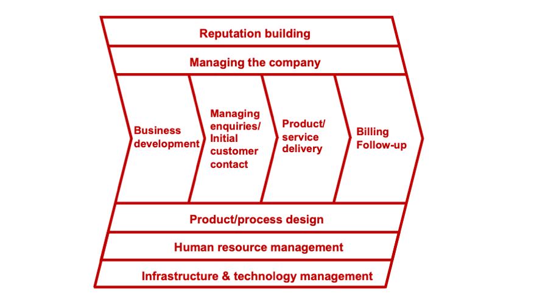

The value chain: a valuable tool for improving your customer experience
The value chain is defined as “the various activities and processes involved in creating a product or performing a service. A value chain can consist of multiple stages of a product or service’s lifecycle, including research and development, sales, and everything in between” (Harvard Business School).
Value chain diagram
Your value chain can be represented neatly in a diagram. Traditionally value chain analysis has been used to identify opportunities for improving operational efficiency, for example by reducing costs, or for product differentiation. However, value chain thinking can also be used to help you to improve your customer experience.

© 2022 Catherine Brys - Brys Strategic Consulting
Your customer’s experience is the sum total of everything you do, front-of-house and backstage. What goes on behind the scenes has a ripple-through effect on the customer experience.
Helping your staff see their contribution
Constructing a value chain diagram is a great exercise to do collectively with your staff. Make sure everyone is involved, especially those in back-office and support roles. Ask people to mark on the diagram to which segments of the value chain they contribute. Every team should be represented in the diagram!
In this way the value chain is useful to make explicit where every person’s and every team’s contribution fits in and adds value to the product/service – and the overall experience – you deliver to customers.
Identifying the weakest links
Crucially, your customer experience is only as good as the weakest link in your value chain. So consider:
- To what extent does each team and person recognize their role in delivering excellent customer experiences?
- Who lives and breathes customer experience excellence?
- Which teams think they don't have a role to play?
- Does everyone feel valued for the role they play?
- To what extent are your teams focused on working collaboratively to deliver excellent customer experiences? Are there any organisational silos?
- Are you organised optimally to deliver great customer experiences?
- Where are the weakest links?
Next steps
Once you have gained insights into these questions, you are in a great position to start improving your customer experience. My Action Planner gives you a step-by-step pragmatic approach to do so. And check out my book “The Most Rewarding Way to Improve Profitability — How to create excellent customer experiences” for more insights into how you can make your customer experience topnotch.
Feel free to drop me a line to share your thoughts — catherine [at] strategic-consulting.scot
Diagram © 2022 Catherine Brys - Brys Strategic Consulting